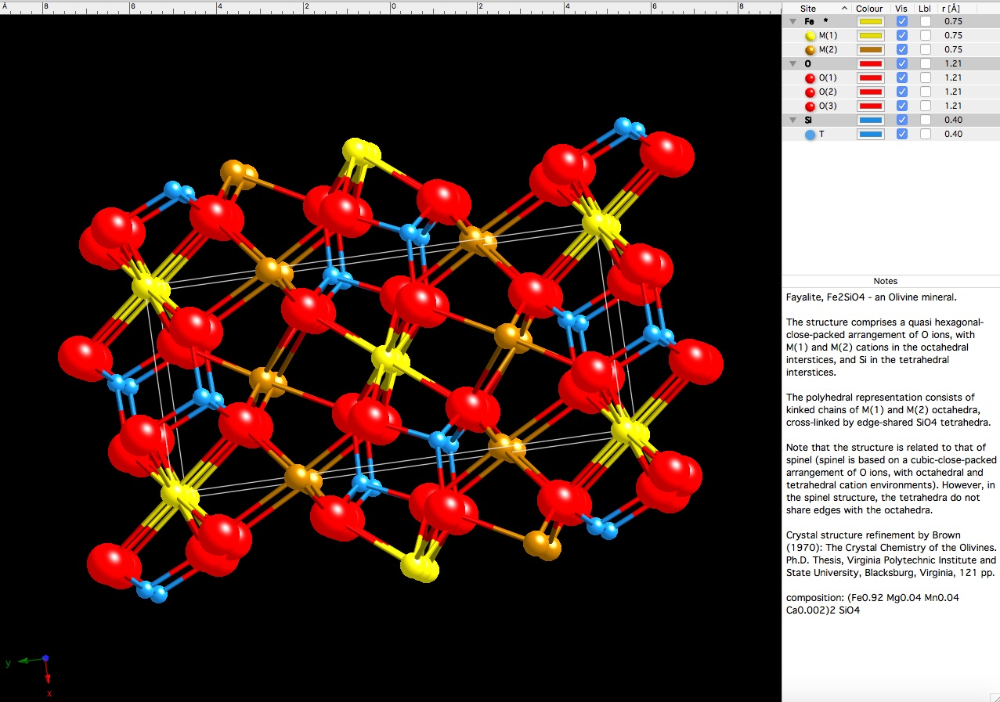

Klein - Chapter 1
Introduction and overview
What is a mineral? Is it something found in your Wheaties?
Definition of a mineral - A naturally occurring solid crystalline compound with a definite (but not generally fixed) composition. As you will see, that as soon as we write down the definition, we will be making exceptions. Many textbooks contain the word inorganic in the definition. As discussed below, biomineralization is a leading field of study and we know organic processes are often responsible for mineral formation. Writing the defintion of a mineral in your notebooks gives license to "bend the rules". Let's examine each word in the definition of a mineral to see how the rules really work.
There are many examples of synthetic minerals
Does everyone remember what a mole is? Recall, for example, that one mole is equal to 6.023 x 1023 Si atoms.
The gram-formula weight of a mineral is the sum of the atomic weights, (e.g., Si = 28 and O =16, therefore, [28 + (2 x 16)]= 60 g or 1 mole of quartz).
The types of atoms in a particular mineral structural site may vary. Therefore, the chemical composition of a mineral may not always be exactly the same. (i.e., different atoms will substitute and occupy a similar atom site).
|  |
This figure shows the repeating crystalline structure of the olivine group mineral fayalite.
Red = Oxygen Blue = Silicon Brown = Iron Imagine substituting one or more of the iron atoms with a magnesium atom. This is termed isomorphous (same shape) substitution. |
In the case where isomorphous substitution occurs, the formula is represented by a more general expression. The elemental symbols are put into parenthesis, separated by a coma(s) and the molar proportion is subscripted outside the parenthesis.
For example, as shown in the figure above, the olivine group minerals can have different proportions of Fe and Mg in an octahedral site. The formula is represented parenthetically by (Fe,Mg)2SiO4; The molar sum of Fe and Mg must equal two in the chemical formula as written.
Examples of mineraloids include: coal, obsidian, allophane, amber, opal, fulgarite
Some materials may start out as well-order compounds (i.e. crystallize). However, if they are proximal to decaying radioactive isotopes, then the radiation damage (alpha decay) can destroy long-range crystalline order. This process creates a metamict texture.
A semantic aside... Another way to distroy the crystalline order of a mineral is by chemical oxidation. For example, ferrous iron the mineral ilmenite (FeTiO3) can oxidize to the ferric state. As the Fe diffuses out of the ilmenite and precipitates as goethite (FeOOH), the mineral pseudobrookite (Fe2TiO5) is left behind. The ability to detect ordering is dependent upon the principles of the analytical method being used. For example, Fe2TiO5 and FeOOH may be amorphous to X-ray diffraction techniques, however short range order may be detected using electron diffraction. Therefore, you may encounter the expression "X-ray amorphous", which means that the material may still be crystalline, but the degree of ordering is extremely small. Such materials that have extremely small degrees of crystalline order are referred to as "nano-crystalline" compounds.
The more we study the earth's near-surface organic and inorganic processes, the more difficult it has become to separate the influence of the two on each other. Try not to get into the mind-set that certain minerals form completely through inorganic processes or organic processes.
Regardless of the ambiguities here, the fact is that many minerals are produced or mediated through biological processes. This process is termed biomineralization and it is a major process for mineral formation on the earth's surface.
Examples:
calcite - clam shell
magnetite - birds, worms
apatite - mammal bones
weddellite* - kidney stones
* organic compound
Once again, natural substances such as amber, coal and petroleum, do not fall into our formal definition of a mineral. Primarily because they are organic and amorphous in nature. However, they are of interest to geologists. These natural materials can react to make minerals. For examples the thermal and pressure alteration of coal will metamorphose the carbon into the mineral graphite.
Naming of a mineral: Commission on New Minerals and Mineral Names (CNMMN) which is part of the International Mineralogical Association (IMA) reviews all nomenclature. Minerals are classified by chemistry and structure. However, the name of a mineral has no relation to its classification. Usually a mineral is named after the 1) locality discovered (weddellite found in the Weddell Sea, Antarctica) 2) a physical property (magnetite has magnetic properties) or 3) an honorable person (Sillimanite - Famous Yale mineralogist... BTW, it's considered too egotistical to name a mineral after yourself).
A mineral must pass a number of rigorous tests in order for it to qualify as a "new" mineral. One needs to show that it's structure and composition are vastly different from an existing approved mineral name.
Semantics also enter into the equation once again. For example, should a mineral that only forms in an acid mine drainage area be considered a mineral? The acid mine drainage is a consequence of human activities. Therefore, is it a natural occurrence?
Sources of information about minerals
Mineralogical Society of America
{kind=link}